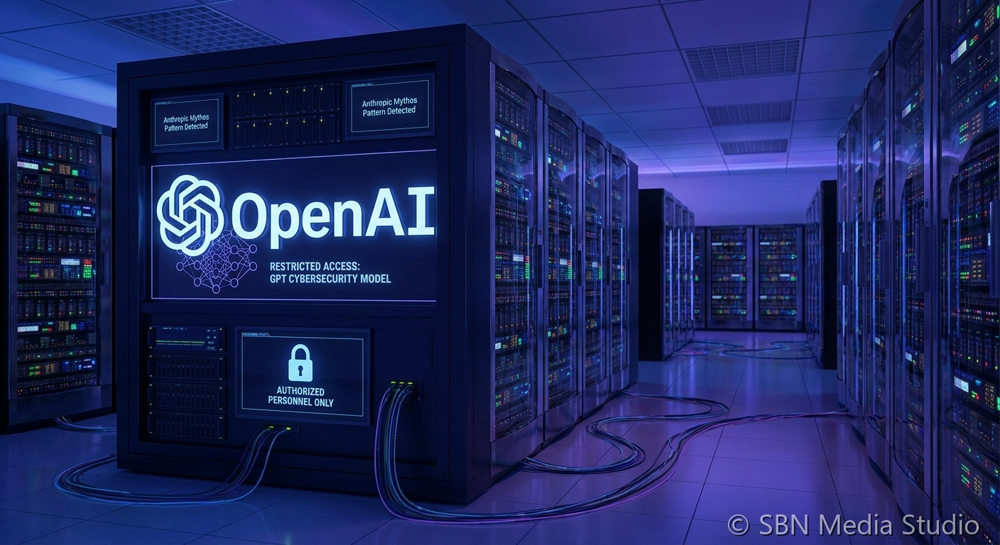

OpenAI Unveils Restricted GPT-5.4-Cyber Security Model, Taking Different Approach Than Anthropic's Mythos

OpenAI unveiled GPT-5.4-Cyber on April 15, 2026 — a restricted-access AI model designed specifically for offensive and defensive cybersecurity work — following the pattern established by Anthropic's Claude Mythos Preview the previous week. Like Mythos, GPT-5.4-Cyber is capable of autonomously identifying and exploiting software vulnerabilities at a scale and speed that far exceeds human security teams. The model can conduct full attack chain simulations, identify zero-day vulnerabilities, and generate working proof-of-concept exploits with minimal human prompting.
The key differentiator between OpenAI's approach and Anthropic's is access philosophy. Anthropic restricted Mythos Preview to roughly 40 organizations — primarily major technology companies and critical infrastructure operators — under a tightly controlled Project Glasswing framework. OpenAI, by contrast, is making GPT-5.4-Cyber available to a broader pool of verified security researchers, including penetration testing firms, academic institutions, and vetted individual researchers, arguing that wider access to properly screened defenders produces better security outcomes than artificial scarcity. The disagreement reflects deeper strategic differences between the two companies on AI safety deployment.
Both models represent a new category of AI tool that the industry is grappling with: systems powerful enough to meaningfully change the attack-defense balance in cybersecurity, but dangerous enough that unrestricted release would pose significant national security risks. CNBC reported that the two companies' diverging release strategies have sparked internal debate at major technology companies about which model to adopt. The broader question — whether AI-enabled offensive capabilities should be concentrated among a small number of trusted partners or distributed more widely to improve collective defense — is emerging as one of the defining policy questions of the AI era, with implications for government regulation of AI security tools.
Sources
CNBC, TheNews.pk, PYMNTS